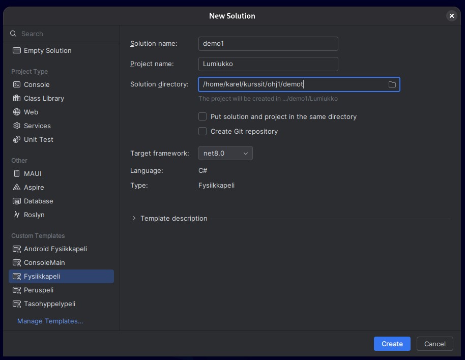

Ohjelmointiympäristö kuntoon¶
Ensimmäisten viikkojen tehtävät voi periaatteessa suorittaa verkkoselaimessa, mutta varsin pian on tarpeen saada oma ohjelmointiin sopiva ympäristö toimimaan tietokoneella. Sovelluskehittimen (engl. Integrated Development Environment, IDE) asentaminen omalle tietokoneelle on tärkeä askel kohti itsenäisempää ohjelmointia. IDE mahdollistaa esimerkiksi seuraavat asiat:
- koodin kirjoittaminen
- koodin kääntäminen ohjelmaksi
- virheiden ja ongelmien etsiminen koodissa
- koodin navigointi- ja refaktorointityökaluja, kuten "Etsi koodista", kirjoittamisen aikaiset ehdotukset, koodin massamuokkaaminen
- ohjelman virheiden jäljitys eli debuggaus
- samaan asiakokonaisuuteen liittyvän koodin hallinta ("projektit")
- versionhallinnan tuki
Lisäksi itse asennettua IDE-ympäristöä on helpompi mukauttaa omien tarpeiden mukaan, kuten vaihtaa värejä, fontteja ja muita asetuksia.
Ellet ole vielä asentanut kehitystyökaluja, tee se nyt Työkalut-sivun ohjeiden mukaisesti.
IDE-ympäristöjä on useita eri ohjelmointikielille ja ympäristöille. Ohjelmointi 1 -opintojaksolla käytetään JetBrains Rider-kehitysympäristöä, joka on erityisesti C#- ja .NET-ajoympäristölle tarkoitettu IDE. Riderilla voi tehdä niin tekstipohjaisia sovelluksia kuin Jypeli-pelejäkin.
Vaihtoehtoisesti voit käyttää myös Visual Studio Code -editoria (lyhyesti VS Code), joka on hyvin suosittu tekstieditori, jota voi käyttää myös IDE:nä.
Sivuhuomiona mainittakoon, että kaikenlaiset pilvipalvelut ovat yleistyneet, ja myös pilvipohjaisia kehitysympäristöjä on olemassa. Kuitenkin edelleen yleinen käytäntö ohjelmoinnin opiskelussa, kuten myös Ohjelmointi 1 -kurssilla, on asentaa kehitysympäristö omalle paikalliselle tietokoneelle. Oman kehitysympäristön käyttö on yleensä nopeampaa, edullisempaa ja joustavampaa kuin pilvipohjaiset ratkaisut. Myös työelämässä paikalliset kehitysympäristöt ovat yleensä vallitseva käytäntö.
Suositeltava hakemistorakenne¶
Kaikki tämän opintojakson asiat kannattaa tehdä esimerkiksi kansioon nimeltä
ohj1. Se, mihin tämä kansio kannattaa sijoittaa tietokoneellasi paikkaan
riippuu käyttöjärjestelmästäsi ja omista mieltymyksistäsi.
Sopivia sijainteja ovat esimerkiksi:
- Windows:
C:\Users\<käyttäjätunnus>\ohj1taiC:\Opiskelu\ohj1 - Mac ja Linux:
~/ohj1
Korvaa <käyttäjätunnus> omalla käyttäjänimelläsi tai vastaavalla tunnisteella.
Omalla koneella sen ei tietenkään tarvitse olla sama kuin yliopiston
käyttäjänimi.
Agoran tietokoneluokassa käytä kansionimeä: c:\MyTemp\<käyttäjätunnus>\ohj1
Kansio voi sijaita jossain muuallakin. Tärkeintä on, että itse tiedät missä kansiossa työskentelet, ja että löydät sen helposti myöhemmin.
Tämän ohj1-kansion alle kannattaa luoda kaksi alikansiota: demot ja
harjoitustyo.
Rakenne näyttäisi nyt tältä.
Riderin peruskäyttö: solution ja projekti¶
Rider käyttää ns. solution-projekti-rakennetta koodin organisointiin. Projekti kuuluu aina johonkin solutioniin. Yksi solution voi sisältää yhden tai useampia projekteja. Projekti sisältää yhteen ohjelmaan (peliin tai konsolisovellukseen) liittyvän koodin ja grafiikka- ja musiikkitiedostot.
Esimerkiksi yksi demokerta, esimerkiksi demo1 voi olla yksi solution, ja se
sisältää useita projekteja (demotehtäviä), kuten Lumiukko ja HelloWorld.
Useiden projektien lisäämisessä samaan solutioniin on se etu, että silloin voi
pitää samaan demoon liittyvät tehtävät yhtä aikaa näkyvillä ilman että niitä
tarvitsee jatkuvasti avata tai sulkea.
Sivuhuomiona mainittakoon, että solution on Microsoftin keksimä nimi tällaiselle projekteja koostavalle kapistukselle. Sana ei varsinaisesti tarkoita mitään.
Uusi solution¶
Katsotaan nyt uuden solutionin ja projektin luomista Riderissa. Tämän luvun
aikana tehdään yksi solution (demo1) ja siihen kolme projektia: Lumiukko,
HelloWorld ja YmpyraPeli.
Luodaan uusi solution ja siihen projekti edellä luodun kansiorakenteen
alaisuuteen. Tässä esimerkissä luodaan demo1-niminen solution ja siihen
Lumiukko-niminen projekti demot-alikansioon. Mikäli haluat lisätä projektin
olemassa olevaan solutioniin, katso luku Uusi projekti olemassa olevaan
solutioniin.
- Valitse
New Solution. Mikäli joku vanha solution on jo auki, niin sama onnistuu yläpalkista File › New Solution.
- Valitse vasemmalta Custom templates -listasta
FysiikkaPeli. - Anna solutionin nimeksi
demoX, esimerkiksidemo1 - Anna projektin nimi, esimerkiksi
LumiukkotaiTeht3Lumiukkoriippuen tehtävästä mitä olet tekemässä (Huom Iso alkukirjan!). -
Kirjoita tai selaa poluksi edellisessä kohdassa tekemäsi kansion sijainti. Jos olet tekemässä demoja, niin tähän kohtaan tulee esimerkiksi
C:\Users\<käyttäjätunnus>\kurssit\ohj1(Windows) tai~/kurssit/ohj1(Mac ja Linux).Yliopiston mikroluokissa projekti tulee tehdä ensin tietokoneen kiintolevylle, esim.
C:\MyTemp\<käyttäjätunnus>\.... Siirrä lopuksi tiedostot muualle talteen. * JätäPut solution and project in the same directory-boksi tyhjäksi. *Framework-kohtaannet8.0* KlikkaaCreate. * Tutki syntynyttä tiedostohierarkiaa esimerkiksi tiedostohallinnassa tai Finderissa. Hierarkian pitäisi näyttää suurin piirtein tältä:
Lyhyt selitys demo1-kansion sisältämistä tiedostoista ja kansioista:
demo1 - kansio joka sisältää demo1-solutionin
demo1.sln - solution-tiedosto, jossa luetellaan projektit
Lumiukko - kansio, jonka alla Lumiukko-projekti
bin - kansio, jonne tulee ajettavaa koodia
obj - kansio, jonne tulee käännettyjä tiedostoja
Lumiukko.cs - C#-lähdekooditiedosto, johon tulee lumiukon piirtävä koodi
Ohjelma.cs - C#-lähdekooditiedosto, joka sisältää pääohjelman
Lumiukko.csproj - projektin asetustiedosto, jossa kerrotaan mitä tiedostoja
projektiin liittyy
- Klikkaa Solution Explorerissa
Lumiukko.cs-kooditiedostoa. Koodissa pitäisi näkyä:
public class Lumiukko : PhysicsGame
{
public override void Begin()
{
// Kirjoita ohjelmakoodisi tähän
PhoneBackButton.Listen(ConfirmExit, "Lopeta peli");
Keyboard.Listen(Key.Escape, ButtonState.Pressed, ConfirmExit, "Lopeta peli");
}
}
- Kokeile käynnistää ohjelma
Run/Run 'Lumiukko', jolloin pitäisi näkyä uusi ikkuna vaaleansinisellä taustalla. Jos kaikki toimii, sulje ikkuna. - Pyyhi pois koko se rivi jossa lukee "
Kirjoita ohjelmakoodisi tähän" ja kirjoita tilalle
Level.Background.Color = Color.Black;
PhysicsObject pallo = new PhysicsObject(200, 200, Shape.Circle);
pallo.Color = Color.White;
Add(pallo);
-
Käynnistä ohjelma uudestaan ja tarkista että ohjelma muuttui.
-
Kirjoita luokan dokumentaatiokommentti näppäilemällä luokan esittelyrivin (eli
public class...) yläpuolelle kolme kauttaviivaa///. Kirjoita<summary>-tagien väliin selvitys luokan toiminnasta (eli että piirretään lumiukko) - Kirjoita vastaavasti
Begin-metodin dokumentaatiokommentit.
Uusi projekti olemassa olevaan solutioniin¶
Oletetaan, että solution on jo olemassa.
Lisätään siihen toinen projekti olemassa olevan lisäksi.
Tässä esimerkissä luodaan uusi ConsoleMain-projekti olemassa olevaan demo1-solutioniin.
- Klikkaa Explorer-paneelissa solutionin
demo1nimeä hiiren oikealla (Macissa kahdella sormella). - Valitse Add › New Project
- Valitse vasemmalta
ConsoleMain-projektimalli - Anna nimeksi
HelloWorld - Paina
Create. - Ensimmäisellä kerralla projekti ajetaan klikkaamalla Explorerissa sen nimeä
HelloWorldhiiren oikealla ja valitseRun HelloWorld. Myöhemmillä kerroilla voit käynnistää projektin käynnistämällä yläpalkista haluamasi projektin.
Jypeli-projektit¶
Jypeli-projektin voi tehdä valitsemalla solutionia tai projektia luodessa Custom Templates -kohdasta oikean projektimallin.
ConsoleMain(Konsolisovellukset, joissa on Ohj1 kurssin pohja)Fysiikkapeli(Fysiikkaa käyttävät pelit ja muut graafiset sovellukset)Tasohyppelypeli(Esimerkkipeli)Android Fysiikkapeli(Android-alustaa varten)
Graafinen sovellus Jypeli-kirjastolla¶
Jypeli on C#-kielellä kirjoitettu pelimoottori, joka on suunniteltu erityisesti opetuskäyttöön. Jypeli tarjoaa helppokäyttöisen tavan pelien luomiseen, mikä tekee siitä hyvän valinnan tälle kurssille.
Jypelin avulla voi luoda 2D-pelejä, joissa on grafiikkaa ja ääniä. Jypeliin on tarjolla paljon valmiita ohjeita ja esimerkkejä, jotka auttavat sinua pääsemään alkuun pelien tekemisessä.
Tehdään seuraavaksi luvun kolmas projekti: pieni Jypeli-esimerkki, jossa luodaan
ikkuna ja piirretään siihen ympyrä. Projektin nimeksi tulee YmpyraPeli.
- Lisää
demo1-solutioniin uusi projekti samaan tapaan kuin edellä HelloWorld: klikkaa Explorer-paneelissa solutionindemo1nimeä hiiren oikealla ja valitse Add › New Project. - Valitse vasemmalta
Fysiikkapeli-projektimalli. - Anna nimeksi
YmpyraPeli. Rider nimeää projektin mukaan myös kooditiedoston (YmpyraPeli.cs) ja siinä olevan luokan, joten luokan nimi on sama kuin alla olevassa koodissa. - Paina
Create. - Avaa
YmpyraPeli.csja korvaaBegin-metodin sisältö alla olevan koodinBegin-metodin sisällöllä. - Aja projekti klikkaamalla Explorerissa sen nimeä
YmpyraPelihiiren oikealla ja valitsemallaRun 'YmpyraPeli'.
using Jypeli;
public class YmpyraPeli : PhysicsGame
{
public override void Begin()
{
GameObject ympyra = new GameObject(50, 50);
ympyra.Shape = Shape.Circle;
ympyra.Position = new Vector(0, 0); // Asetetaan ympyrä keskelle ikkunaa
Add(ympyra); // Lisätään ympyrä peliin
}
}
Voit kokeilla peliä myös suoraan tällä sivulla klikkaamalla yllä olevan koodilaatikon oikean yläreunan vihreää "Play"-painiketta. Ikkunaan pitäisi ilmestyä keskelle pieni ympyrä.
Huh! Siinä oli jo aika paljon uutta. Käydään koodi läpi vaiheittain.
Ensimmäinen rivi luo uuden muuttujan nimeltä ympyra, joka on tyyppiä GameObject. Sen leveydeksi ja korkeudeksi annetaan 50.
Seuraavaksi asetamme ympyra muuttujan muodoksi Shape.Circle ja sijainniksi asetetaan vektori, joka osoittaa keskipisteeseen new Vector(0, 0).
ympyra.Shape = Shape.Circle; // Asetetaan muodoksi Shape.Circle
ympyra.Position = new Vector(0, 0); // Asetetaan ympyrä keskelle ikkunaa
Lopuksi lisäämme ympyra muuttujan näkyviin kutsumalla Jypelin Add metodia. ympyra muuttuja on siis olemassa jo heti ensimmäisen rivin jälkeen, mutta se pitää erikseen vielä lisätä "pelimaailmaan".
Pääohjelma Jypeli-projekteissa (Main)¶
Jypeli-projektissa Main-pääohjelma menee Ohjelma.cs-tiedostoon, joten jos copy-pastetat
koodin, joka sisältää Main-pääohjelman, niin poista Main-pääohjelma Portaat-luokan (tms. projektisi nimeä vastaava luokka)
sisältä. Projektissa ei saa olla kahta Main-pääohjelmaa.
TIM-tehtävien tekeminen Riderissa¶
Voit tehdä TIMin harjoitustehtäviä Riderissa. Osassa TIM-tehtävistä on kuitenkin piilotettuja osia: tehtävälaatikossa
näkyy vain se kohta, johon vastaus kirjoitetaan, ja muu ohjelma (esimerkiksi
using-rivit, luokan esittely ja pääohjelma) on piilossa. Pelkkä näkyvä osa ei
siksi käänny Riderissa sellaisenaan. Tässä ohjeessa kerrotaan, miten tällaiset
tehtävät kannattaa tehdä Riderissa.
Ideana on kopioida tehtävän koko koodi piilotettuine osineen TIMistä Rideriin,
kirjoittaa ja testata vastaus siellä ja kopioida lopuksi valmis koodi takaisin
TIMiin. Koko koodissa kommentit BYCODEBEGIN ja BYCODEEND kertovat, mikä osa
koodista on TIMissä näkyvää vastausaluetta.
Vinkki
Alla kopioidaan ja liitetään koko tiedoston sisältö kerralla. Kaiken saa valittua näppäimillä Ctrl + A, kopioitua näppäimillä Ctrl + C ja liitettyä näppäimillä Ctrl + V. Macissa käytä Ctrl-näppäimen sijaan Cmd-näppäintä.
Komentorivitehtävät¶
Komentorivitehtävä tehdään ConsoleMain-projektissa.
- Riderissa: Tee uusi projekti ja valitse projektimalliksi
ConsoleMain. Katso tarvittaessa ohjeet luvusta Uusi projekti olemassa olevaan solutioniin. - TIMissä: Klikkaa tehtävän palautuslaatikossa olevaa Näytä koko koodi -linkkiä ja sen jälkeen Copy-linkkiä. Tehtävän koko koodi on nyt leikepöydällä.
- Riderissa: Avaa juuri tekemäsi projektin
.cs-tiedosto, valitse sen koko sisältö ja liitä TIMistä kopioimasi koodi tilalle. - Riderissa: Kirjoita vastauksesi. Jos liitetyssä koodissa on kommentit
BYCODEBEGINjaBYCODEEND, tee vastaus näiden rivien väliin. - Riderissa: Kun ohjelma toimii, valitse taas tiedoston koko sisältö ja kopioi se.
- TIMissä: Liitä koodi tehtävän palautuslaatikkoon ja palauta tehtävä tavalliseen tapaan.
Vaiheet näkyvät myös alla olevalla esimerkkivideolla, jossa tehtävän koodi haetaan TIMistä Rideriin ja viedään takaisin (videossa ei ole ääntä).
Jypeli-tehtävät¶
TIMin Jypeli-tehtävät käyttävät Fysiikkapeli-projektimallia, ellei tehtävässä
toisin mainita. Erona komentorivitehtäviin on, että projektin nimen pitää olla
sama kuin tehtävän koodissa olevan luokan nimi, joten luokan nimi katsotaan
TIMistä ennen projektin luomista.
- TIMissä: Klikkaa tehtävän palautuslaatikossa olevaa Näytä koko koodi
-linkkiä ja katso, mikä on koodissa olevan luokan (
class) nimi. - Riderissa: Tee uusi projekti. Valitse projektimalliksi
Fysiikkapeli(ellei toisin ohjeisteta) ja anna projektin nimeksi sama kuin tehtävän luokan nimi. - TIMissä: Klikkaa Copy-linkkiä. Tehtävän koko koodi on nyt leikepöydällä.
- Riderissa: Avaa se projektin
.cs-tiedosto, jonka nimi on sama kuin projektin nimi, valitse sen koko sisältö ja liitä TIMistä kopioimasi koodi tilalle. - Riderissa: Kirjoita vastauksesi. Jos liitetyssä koodissa on kommentit
BYCODEBEGINjaBYCODEEND, tee vastaus näiden rivien väliin. - Riderissa: Kun peli toimii, valitse taas tiedoston koko sisältö ja kopioi se.
- TIMissä: Liitä koodi tehtävän palautuslaatikkoon ja palauta tehtävä tavalliseen tapaan.
Varoitus
Rider luo Jypeli-projektiin automaattisesti myös Ohjelma.cs-tiedoston, jossa
on Main-pääohjelma. Sitä ei tarvitse eikä pidä muokata, eikä TIMin koodia
liitetä sinne.